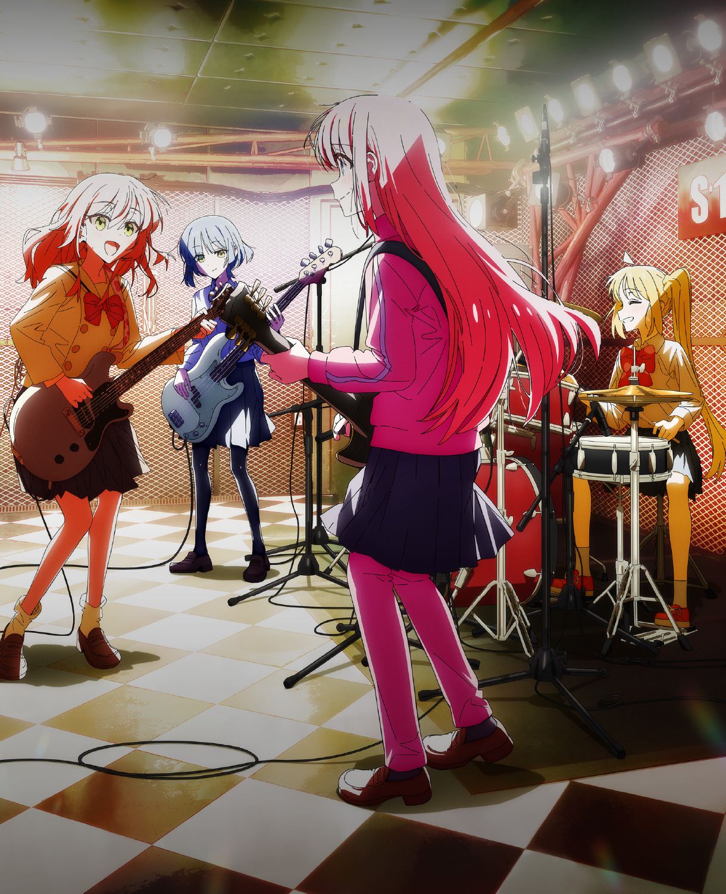

点击继续，慢慢读就好

BOCCHI THE ROCK! · FAN GAME
ぼっち・ざ・放課後！
下北泽，
异 常 发 生 中。
社恐吉他英雄、欠债贝斯手、发光体与唯一的常识人。
你推开了 STARRY 的门——现在逃跑还来得及吗？
HITORI GOTOH
「陌生人出现了！
社交系统……停止响应。」
CHOOSE YOUR COMPANY
选择你的下北泽共犯。
四位问题儿童。等等，虹夏说她不算。
A SMALL PLACE FOR YOU
警告：本店贝斯手会向你借钱。
波奇正在纸箱里待机。虹夏在招人。喜多的亮度已超标。
FOUR ROUTES · TWELVE CHAPTERS
结束乐队 · 场外事件簿
每条路线独立推进 · 选择改变回应与尾声
KESSOKU BAND / LISTENING ROOM
耳机就位，音量解禁。
放学后的下北泽一页一瞬间
LYRICS
暂无歌词
结束乐队的歌单 13 TRACKS
音乐在本机播放。LRC 歌词按歌曲保存；导入的音频刷新后需重新选择。
STARRY PRIVATE SCREENING
LIVE 开演。前排禁止逃跑。
▷
今晚的主角，是结束乐队。
选择演奏片段，前往 B 站一起刷弹幕。
我们的放映室
动画演奏前往哔哩哔哩观看，弹幕与清晰度由 B 站播放器提供。
拆开今晚的后台档案。
结束乐队 · 收藏图鉴
OUR LITTLE SCRAPBOOK